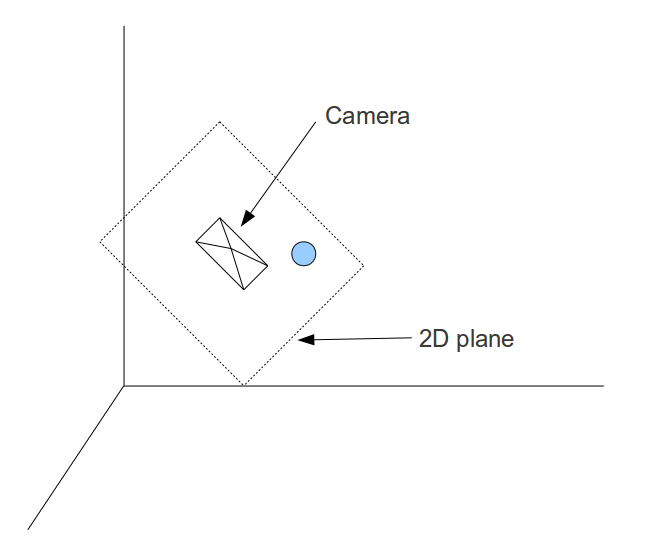
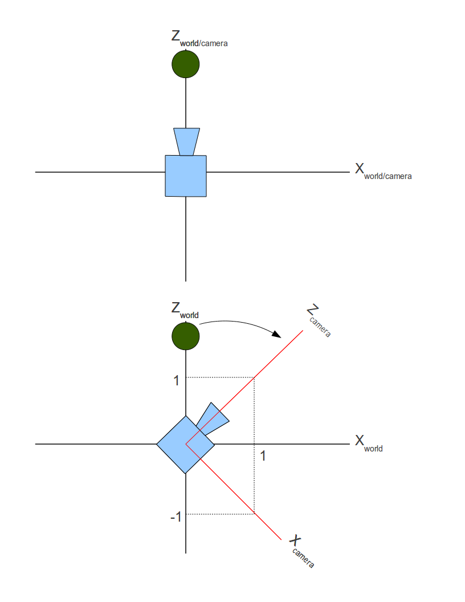
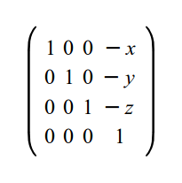
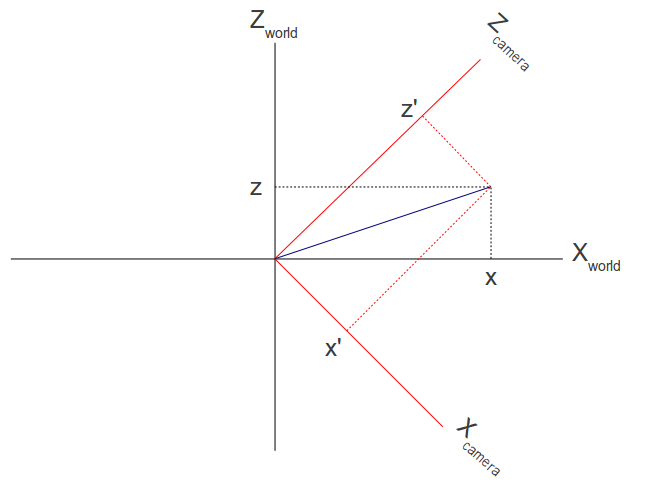
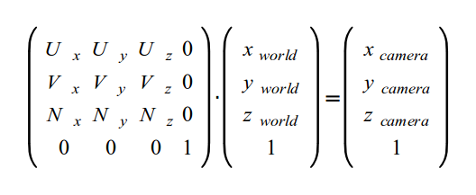

Background
In the last several tutorials we saw two types of transformations. The first type were transformations that change the position (translation), orientation (rotation) or size (scaling) of an object. These transformations allow us to place an object anywhere within the 3D world. The second type was the perpsective projection transformation that takes the position of a vertex in the 3D world and projects it into a 2D world (i.e. a plane). Once the coordinates are in 2D it is very easy to map them to screen space coordinates. These coordinates are used to actually rasterize the primitives from which the object is composed (be it points, lines or triangles).
The missing piece of the puzzle is the location of the camera. In all the previous tutorials we implicitly assumed that the camera is convenietly located at the origin of the 3D space. In reality, we want to have the freedom to place the camera anywhere in the world and project the vertices into some 2D plane infront of it. This will reflect the correct relation between the camera and the object on screen.
In the following picture we see the camera positioned somewhere with its back to us. There is a virtual 2D plane before it and the ball is projected into the plane. The camera is tilted somewhat so the plane is tilted accordingly. Since the view from the camera is limited by its field of view angle the visible part of the (endless) 2D plane is the rectangle. Anything outside it is clipped out. Getting the rectangle onto the screen is our target.
Theoretically, it is possible to generate the transformations that would take an object in the 3D world and project it onto a 2D plane lying infront of a camera positioned in an arbitrary location in the world. However, that math is much more complex than what we have previously seen. It is much more simple to do it when the camera is stationed at the origin of the 3D world and looking down the Z axe. For example, an object is positioned at (0,0,5) and the camera is at (0,0,1) and looking down the Z axe (i.e. directly at the object). If we move both the camera and the object by one unit towards the origin then the relative distance and orientation (in terms of the direction of the camera) remains the same only now the camera is positioned at the origin. Moving all the objects in the scene in the same way will allow us to render the scene correctly using the methods that we have already learned.
The example above was simple because the camera was already looking down the Z axe and was in general aligned to the axes of the coordinate system. But what happens if the camera is looking somewhere else? Take a look at the following picture. For simplicity, this is a 2D coordinate system and we are looking at the camera from the top.
The camera was originally looking down the Z axe but then turned 45 degrees clockwise. As you can see, the camera defines its own coordinate system which may be identical to the world (upper picture) and may be different (lower picture). So there are actually two coordinate systems simulatenously. There is the 'world coordinate system' in which the objects are specified and there is a camera coordinate system which is aligned with the "axes" of the camera (target, up and right). These two coordinate systems are known as 'world space' and 'camera/view space'.
The green ball is located on (0,y,z) in world space. In camera space it is located somewhere in the upper left quadrant of the coordinate system (i.e. it has a negative X and a positive Z). We need to find out the location of the ball in camera space. Then we can simply forget all about the world space and use only the camera space. In camera space the camera is located at the origin and looking down the Z axe. Objects are specified relative to the camera and can be rendered using the tools we have learned.
Saying that the camera turned 45 degrees clockwise is the same as saying that the green ball turned 45 degrees counter-clockwise. The movement of the objects is always opposite to the movement of the camera. So in general, we need to add two new transformations and plug them into the transformation pipeline that we already have. We need to move the objects in a way that will keep their distance from the camera the same while getting the camera to the origin and we need to turn the objects in the opposite direction from the direction the camera is turning to.
Moving the camera is very simple. If the camera is located at (x,y,z), then the translation transformation is (-x, -y, -z). The reason is straightforward - the camera was placed in the world using a translation transformation based on the vector (x,y,z) so to move it back to the origin we need a translation transformation based on the opposite of that vector. This is how the transformation matrix looks like:
The next step is to turn the camera toward some target specified in world space coordinates. We want to find out the location of the vertices in the new coordinate system that the camera defines. So the actual question is: how do we transform from one coordinate system to another?
Take another look at the picture above. We can say that the world coordinate system is defined by the three linearly independent unit vectors (1,0,0), (0,1,0) and (0,0,1). Linearly independent means that we cannot find x,y and z that are not all zeros such that x*(1,0,0) + y(0,1,0) + z*(0,0,1) = (0,0,0). In more geometrical terms this means that any pair of vectors out of these three defines a plane which is perpendicular to the third vector (plane XY is perpedicular to Z axe, etc). It is easy to see that the camera coordinate system is defined by the vectors (1,0,-1), (0,1,0), (1,0,1). After normalizing these vectors we get (0.7071,0,-0.7071), (0,1,0) and (0.7071,0,0.7071).
The following image shows how the location of a vector is specified in two different coordinate systems:
We know how to get the unit vectors that represent the camera axes in world space and we know the location of the vector in world space (x,y,z). What we are looking for is the vector (x',y',z'). We now take advantage of an attribute of the dot product operation known as 'scalar projection'. Scalar projection is the result of a dot product between an arbitrary vector A and a unit vector B and results in the magnitude of A in the direction of B. In other words, the projection of vector A on vector B. In the example above if we do a dot product between (x,y,z) and the unit vector that represents the camera X axe we get x'. In the same manner we can get y' and z'. (x',y',z') is the location of (x,y,z) in camera space.
Let's see how to turn this knowledge into a complete solution for orienting the camera. The solution is called 'UVN camera' and is just one of many systems to specify the orientation of a camera. The idea is that the camera is defined by the following vectors:
- N - The vector from the camera to its target. Also known as the 'look at' vector in some 3D literature. This vector corresponds to the Z axe.
- V - When standing upright this is the vector from your head to the sky. If you are writing a flight simulator and the plane is reversed that vector may very well point to the ground. This vector corresponds to the Y axe.
- U - This vector points from the camera to its "right" side". It corresponds to the X axe.
In order to transform a position in world space to the camera space defined by the UVN vectors we need to perform a dot product operation between the position and the UVN vectors. A matrix represents this best:
In the code that accompanies this tutorial you will notice that the shader global variable 'gWorld' has been renamed 'gWVP'. This change reflects the way the series of transformations is known in many textbooks. WVP stands for - World-View-Projection.
Source walkthru
In this tutorial I decided to make a small design change and moved the low level matrix manipulation code from the Pipeline class to the Matrix4f class. The Pipeline class now tells Matrix4f to initialize itself in different ways and concatenates several matrices to create the final transformation.
(pipeline.h:85)
struct {
Vector3f Pos;
Vector3f Target;
Vector3f Up;
} m_camera;
The Pipeline class has a few new members to store the parameters of the camera. Note that the axe that points from the camera to it's "right" is missing (the 'U' axe). It is calculated on the fly using a cross product between the target and up axes. In addition there is a new function called SetCamera to pass these values.
(math3d.h:21)
Vector3f Vector3f::Cross(const Vector3f& v) const
{
const float _x = y * v.z - z * v.y;
const float _y = z * v.x - x * v.z;
const float _z = x * v.y - y * v.x;
return Vector3f(_x, _y, _z);
}
The Vector3f has a new method to calculate the cross product between two Vector3f objects. A cross product between two vectors produces a vector which is perpendicular to the plane defined by the vectors. This becomes more intuitive when you remember that vectors have a direction and magnitude but no position. All vectors with the same direction and magnitude are considered equal, regardless where they "start". So you might as well make both vectors start at the origin. This means that you can create a triangle that has one vertex at the origin and two vertices at the tip of the vectors. The triangle defines a plane and the cross product is a vector which is perpendicular to that plane. Read more on the cross product in Wikipedia.
(math3d.h:30)
Vector3f& Vector3f::Normalize()
{
const float Length = sqrtf(x * x + y * y + z * z);
x /= Length;
y /= Length;
z /= Length;
return *this;
}
To generate the UVN matrix we will need to make the vectors unit length. This operation is formally known as 'vector normalization' is executed by dividing each vector component by the vector length. More on this in Mathworld.
(math3d.cpp:84)
void Matrix4f::InitCameraTransform(const Vector3f& Target, const Vector3f& Up)
{
Vector3f N = Target;
N.Normalize();
Vector3f U = Up;
U = U.Cross(Target);
U.Normalize();
Vector3f V = N.Cross(U);
m[0][0] = U.x; m[0][1] = U.y; m[0][2] = U.z; m[0][3] = 0.0f;
m[1][0] = V.x; m[1][1] = V.y; m[1][2] = V.z; m[1][3] = 0.0f;
m[2][0] = N.x; m[2][1] = N.y; m[2][2] = N.z; m[2][3] = 0.0f;
m[3][0] = 0.0f; m[3][1] = 0.0f; m[3][2] = 0.0f; m[3][3] = 1.0f;
}
This function generates the camera transformation matrix that will be used later by the pipeline class. The U,V and N vectors are calculated and set into the matrix in rows. Since the vertex position is going to be multiplied on the right side (as a column vector) this means a dot product between U,V and N and the position. This generates the 3 scalar projections magnitude values that become the XYZ values of the position in screen space.
The function is supplied with the target and up vectors. The "right" vector is calculated as the cross product between them. Note that we do not trust the caller to pass unit length vectors so we normalize the vectors anyway. After generating the U vector we recalculate the up vector as a cross product between the target and the right vector. The reason will become clearer in the future when we will start moving the camera. It is simpler to update only the target vector and leave the up vector untouched. However, this means that the angle between the target and the up vectors will not be 90 degrees which makes this an invalid coordinate system. By calculating the right vector as a cross product of the target and the up vectors and then recalculating the up vector as a cross product between the target and the right we get a coordinate system with 90 degrees between each pair of axes.
(pipeline.cpp:22)
const Matrix4f* Pipeline::GetTrans()
{
Matrix4f ScaleTrans, RotateTrans, TranslationTrans, CameraTranslationTrans, CameraRotateTrans, PersProjTrans;
ScaleTrans.InitScaleTransform(m_scale.x, m_scale.y, m_scale.z);
RotateTrans.InitRotateTransform(m_rotateInfo.x, m_rotateInfo.y, m_rotateInfo.z);
TranslationTrans.InitTranslationTransform(m_worldPos.x, m_worldPos.y, m_worldPos.z);
CameraTranslationTrans.InitTranslationTransform(-m_camera.Pos.x, -m_camera.Pos.y, -m_camera.Pos.z);
CameraRotateTrans.InitCameraTransform(m_camera.Target, m_camera.Up);
PersProjTrans.InitPersProjTransform(m_persProj.FOV, m_persProj.Width, m_persProj.Height, m_persProj.zNear, m_persProj.zFar);
m_transformation = PersProjTrans * CameraRotateTrans * CameraTranslationTrans * TranslationTrans * RotateTrans * ScaleTrans;
return &m_transformation;
}
Let's update the function that generates the complete transformation matrix of an object. It is now becoming quite complex with two new matrices that provide the camera part. After completing the world transformation (the combined scaling, rotation and translation of the object) we start the camera transformation by "moving" the camera to the origin. This is done by a translation using the negative vector of the camera position. So if the camera is positioned at (1,2,3) we need to move the object by (-1,-2,-3) in order to get the camera back to the origin. After that we generate the camera rotation matrix based on the camera target and up vectors. This completes the camera part. Finally, we project the coordinates.
(tutorial13.cpp:76)
Vector3f CameraPos(1.0f, 1.0f, -3.0f);
Vector3f CameraTarget(0.45f, 0.0f, 1.0f);
Vector3f CameraUp(0.0f, 1.0f, 0.0f);
p.SetCamera(CameraPos, CameraTarget, CameraUp);
We use the new capability in the main render loop. To place the camera we step back from the origin along the negative Z axe, then move to the right and straight up. The camera is looking along the positive Z axe and a bit to the right from the origin. The up vector is simply the positive Y axe. We set all this into the Pipeline object the Pipeline class takes care of the rest.
For more information on this subject check out the following video tutorial by Frahaan Hussain.
Next tutorial